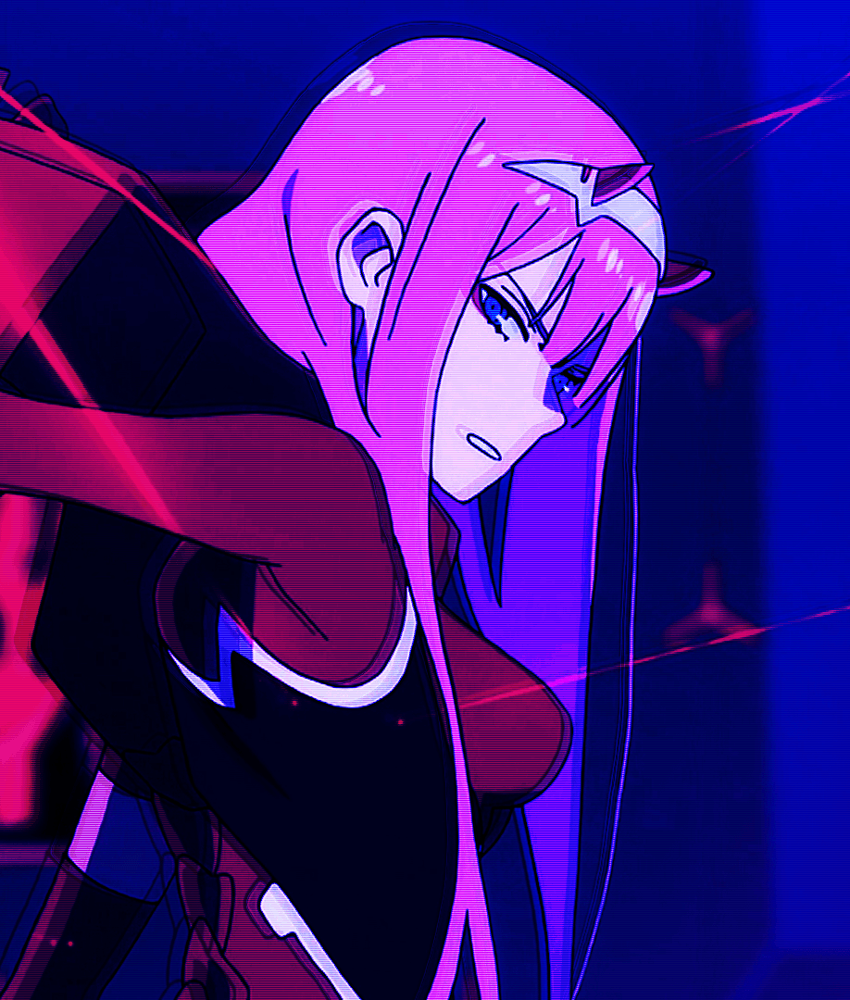
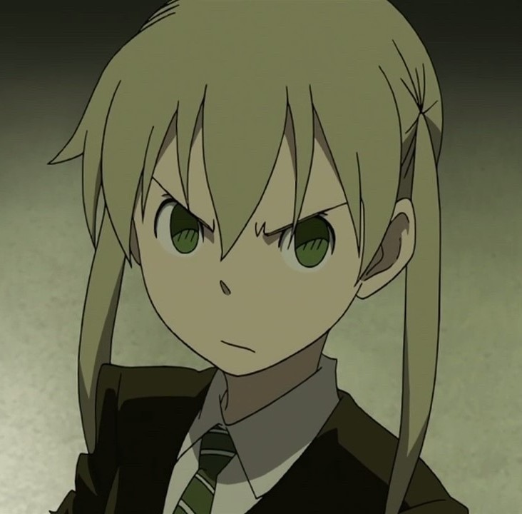

- Home
- Movies
- Tv Series
- Most Popular
- Top Airing

Top Search: One Piece,Spy x Family,Classroom of the Elite,Jujutsu Kaisen 0 Movie,Naruto: Shippuden,Boruto: Naruto Next Generations,Naruto,Jujutsu Kaisen (TV),Black CloverBleach,...

Top Search: One Piece,Spy x Family,Classroom of the Elite,Jujutsu Kaisen 0 Movie,Naruto: Shippuden,Boruto: Naruto Next Generations,Naruto,Jujutsu Kaisen (TV),Black CloverBleach,...
Do you know that according to Google, the monthly search volume for anime related topics is
up to over 1 Billion times? Anime is famous worldwide and it is no wonder we've seen a
sharp rise in the number of free anime streaming sites.
Just like free online movie
streaming sites, anime watching sites are not created equally, some are better than the rest,
so we've decided to build Zoro.to to be one of the best free anime streaming site for all anime
fans on the world.
1/ What is Zoro.to?
Zoro.to is a free site to watch anime and you can even download subbed or dubbed anime in ultra HD quality without any registration or payment. By having No Ads in all kinds,we are trying to make itthe safest site for free anime.
2/ Is Zoro.to safe?
Yes we are, we do have only one Ads to cover the server cost and we keep scanning the ads 24/7 to make sure all are clean, If you find any ads that is suspicious, please forward us the info and we will remove it.
3/ So what make Zoro.to the best site to watch anime free online?
Before building Zoro.to, we've checked many other free anime sites, and learnt from them. We only keep the good things and remove all the bad things from all the competitors, to put it in our Zoro website. Let's see how we're so confident about being the best site for anime streaming:
So if you're looking for a trustworthy and safe site for your Anime streaming, let's give Zoro.to a try.
And if you like us, please help us to spread the words and do not forget to bookmark our site.
Thank you!
This is a copy of zoro.to site
created by Adwaith.
#General 13 hours ago 23
Waiting for Attack on Titan season 4!!!
I want to see the eldian revenge
Ninja Hatori
#General 15 hours ago 32
Why is this Boruto Anime full of Fillers?
Can't wait to see the jougan!
naruhina
#Suggestion 16 hours ago 12
 Iaan
Iaan
anime you should watch
mushoku tensei is a really good anime sure its super weird at times but its top tier you should give it a try
#Question 20 hours ago 17
 RANDOM dude
RANDOM dude
Any anime reccomendations
something like god of high school
#Question 25 hours ago 33
is eren antagonist or protagonist
the total fandom is confused
armin
#Disscussion 30 hours ago 37
How many of you still have faith in boruto
boruto have the potential to be the best sequel
 Zero 2
#Disscussion 31 hours ago 20
Kishimoto has drawn Sarada's mankekyo
sarada's mankekyo design is like a sun
 sneaky Ninja